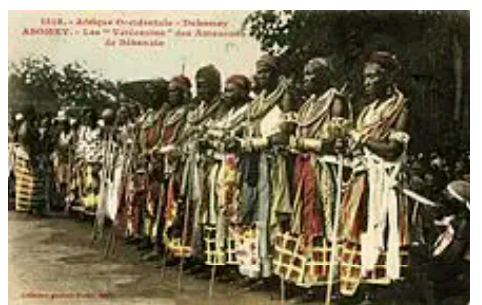

HISTORY OF ILAJI OKE
Ilaji ilé was founded by Akodudu, the son of Aláàfin in 18th century, he was a great warrior who fought Fulani, Idahomey to a hold for Idiko Ilé. He has a son called Odugbemi who took the throne after his demise. There were some other Obas before the Fulani /Idahomey wars broke the towns which led to safety run of the people to various places, ing the reign of Oba Okegbemi Amodo. They ran to a place called Agbamo near Okeho. They were warmly received by the then Onjo of Okeho.
Ilaji people were given parcels of land for farming and other comfort facilities of that time. That left the Agbamo and returned back to ilaji Ile due to a little misunderstanding between them and people of Okeho, during a festival, at Okeho. Though, some did not return to ilaji Ile and didn’t stay back at Agbamo, but moved to Ehinkunle Oshohun, the ascentral home of the people of Ilero.
This time, they were led by Oba Kobolape Agunleyinju. Their arrival was sudden but not surprise to the people of Ilero because an Ifá Oracle had earlier prophesied the arrival of the different people to the place, hence “ÌLÚ ÈRÒ” (ILERO) . The then Elero of Ilero, Oba Ayoola gave a better reception to the people of Agbamo (ilaji ilé), where they narrated their ordeal to them. Ilero people on whose land they settled gave them parcel of land for farming. Since they knew that it would take some time for the farm produce to come out, they also allowed the people of ilaji Ile to take all they wanted to eat from there own farm. These kind gesture made ilaji ilé people to decide to remain with them at Ehinkunle Oshohun.  The ilaji at Ehinkunle Oshohun now moved to where they are now and preferred to be called ilaji oke meaning “in between two mountains”. Since then, the people of ilaji oke and Ilero have been living together in peace and harmony till today. This was followed in sequence by Oba Lawoore Akanni (1). Oba James Olaoye Abiola (1) Ọba Lamidi Olatedun Abimbola Olawoore (II) and Ọba Jeremiah Oyeboade Oladosun Abiola (II) who installed as the Bajigan of ilaji oke early this year, as incumbent till date of writing this book.
The history of Oba /Royal lineage of Ilaji oke is as shown below :
- Chief Agunleyinju Kobolape
- Chief Olaniyonu Ajadi
- Chief Olawoore (Olawoore 1)
- Chief James Olaoye Alabi Abiola (Abiola 1)
- Chief Lamidi Olatedun Abimbola (Olawoore II)
- Chief Jeremiah Oyeboade Oladosun (Abiola II)
Ilaji òkè have five Kings makers and they are :
- The Agoro of ilaji oke
- The Ikolaba of Ilaji oke
- The Maye of Ilaji oke
- The Sobaloju of Ilaji oke
- The Otun Ago of Ilaji oke
Other chiefs are : Osin Ago, Abese Seriki, Asipa, Basorun, Jagun Otunla, Otun Ikolaba, Balogun, Eleede,Iyalode, Bobagunwa and Afija.
| Asiwaju of Ilaji oke | professor chief Layi Egunjobi |
| Yeye Asiwaju of Ilaji oke | Chief Mrs. Layi Egunjobi |
| Atayese of Ilaji oke | Chief Adebisi Adesola |
| Yeye Atayese of Ilaji oke | Chief (Mrs) Adebisi Adesola |
| Otunba of Ilaji oke | chief Olaniyi Oketobo |
| Akinbinrin of Ilaji oke | Hon. Chief (Mrs ) Gbolasire Abigail Bosede Nee Olalekan |
| Ajiroba of Ilaji oke | Chief (Engr) Tunji G. Amosun |
The main occupation of Ilaji oke people are farming hunting, fishing as well as trading as their ancestors did several years ago. The town’s local economy is largely sustained by farmers, hunters, traders weavers and craft men. Some households also rear sheep and goats till today. Traditional crafts practiced in Ilaji oke include cotton weaving by old women, dyeing, leaders work and metallurgy. Ilaji oke is also an ancestral home of Ọranyan, Ogiyan, Sango, Ogun and egungun Idol worshipers.
There was a market in the town in the past that people used to referred to as Oja Ilaji
(Ilaji market). People from different towns and states do come there every five days to buy
 and sell. There was popular saying that “Oja Ilaji mo benikan ó wà” meaning that Ilaji market
not know whether somebody did not come as a result of plenty people that do patronize the market.
There are some of the things they used to sell in the market ;Kudi cloth, Elu (dye mould,
Orogbo òwú òtútù (cotton wool), isu (yam), obi (colanut), Elubo (yam flour). They used to
sell local pap (Eko oko), àkàrà ẹwà. However, they operate trade by barter, that is exchanged
of what you have for what you need. For example dye mould for either cakes or pap and many other
things till the advent of local tender (money).
and sell. There was popular saying that “Oja Ilaji mo benikan ó wà” meaning that Ilaji market
not know whether somebody did not come as a result of plenty people that do patronize the market.
There are some of the things they used to sell in the market ;Kudi cloth, Elu (dye mould,
Orogbo òwú òtútù (cotton wool), isu (yam), obi (colanut), Elubo (yam flour). They used to
sell local pap (Eko oko), àkàrà ẹwà. However, they operate trade by barter, that is exchanged
of what you have for what you need. For example dye mould for either cakes or pap and many other
things till the advent of local tender (money).
There was an Idol called Osanla that they used to worship then, every year. During the worship, eye igun (vulture) do come as a sign of acceptance of the ritual. A sizeable percentage of the people are into educational sector as a tutors and lecturers at various Learning center within and outside the community. Ilaji oke is bounded in the east by Iwere oke and west by Ayetoro oke and Ilero. It has boundaries line in Southwest with Iganna LCDA Iganna. Igala, Igbo and some other foreign tribal groups are within Ilaji oke that are into farming. Whoever that knows Ilaji oke may be sitting on numerous valuable precious stones which may attract foreign investors in the nearest future. Perhaps these may be a pointer to robust future economic empowerment of the town. These are some popular mountain in town àpáta Ango (Ango mountains).
The foremost public primary school in the community Was Community Primary school Ilaji oke, founded in the year 1996 with one secondary school under processing believing God that very soon government will establish higher institutions at Ilaji oke, Ilaji oke has one primary maternity center.
The First Church at Ilaji-Oke was established in the year 1952 called ljo Onitebomi, it was later changed to Ofuwatedo Baptist Church with headship by Pastor Solomon Faronbi from Abese Compound Ilaji-Oke. The mosque was established many decades ago with the first Chief Imam of Ilaji-Oke; Chief Imam Sumonu Adio. Percentage of idol worshippers in Ilaji-Oke is not much as compared to the other religious groups Christianity and Islam.
The first man to build a modern building with about ( 12) twelve rooms and roofed with iron roofing sheets was Pa. Kehinde Ogunlabi from Afija Compound. Also, the first motor was bought by Pa. Amos Olatunde Akanni Onilenla from Otun Ago Compound Ilaji-Oke.
ILAJI-OKE COMMUNITY EXCO
(as at the time of writing this hook)| 1 | Chairman | ChiefThomas Odede |
| 2 | Vice Chairman | Mr. Yekoen Ayangbemi |
| 3 | Secretary | Alfa Biliaminu Ganiyu |
| 4 | Treasurer | Hon. Lekan Idowu |
| 5 | Vice Secretary | Mr. Daniel Ogunwole |
| 6 | Member | Mr. Nathaniel Olayiwola |
| 7 | Member | Mr. Paul0jebisi |
EULOGY OF ILAJL-OKE (ORIKIILAJ1-OKE)
Ilaji mapo ekun Gbenbi ghendi gbendi Oro llaji to gbeni idi tojobe lo Ilaji suuni oko ilu bantabanta Ilaji mapo ekun Akii mo llaji ka mo duro demi Ilaji suuni oko ilu bantabanta Abere to mu toju ti mu Ekun lu gbogbo mapon Ilaji oseni, esu oseni llaji kukuru losan-an Gbooro loru.
EULOGY OF THE PERSON THAT SETTLED ILAJI-OKE
Ninu ile Oba Ajifoluke Oba iso ko gbodo pa esin Ikoko ko gbodo pa odi Awomoju kole pota Oba ibi bi ori eni bapani Awomoju leeri ko leepehoro ninu oko Oba Asogbe digboro Oba Asoatan 'doja Oba afefe gongo mose ota Oba tifie nugbogbo muti ageni Kudumola awo oloye Amodo elewuwoyiwoyi Agunleyinju Oba tii gbonajanjan ninu Oba Timutimu Amodo ba akegbin daanu yo bamubamu kudu ono odu llaji.